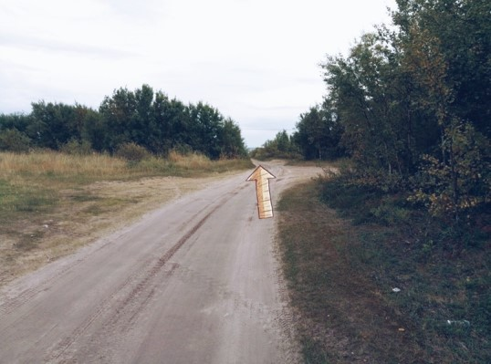
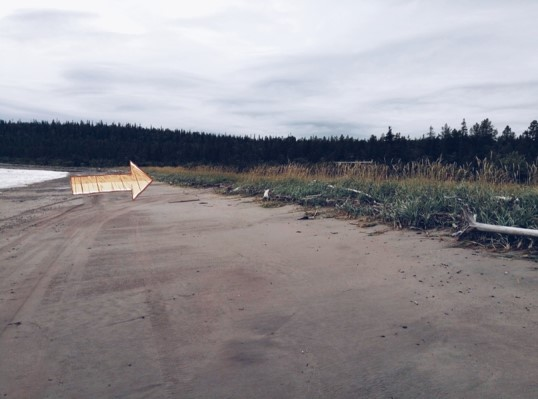
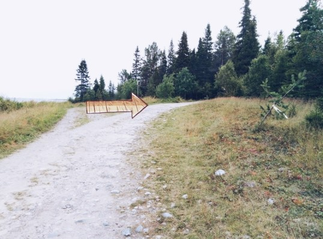
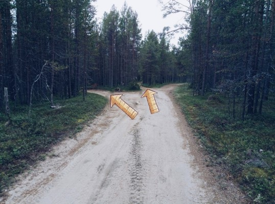
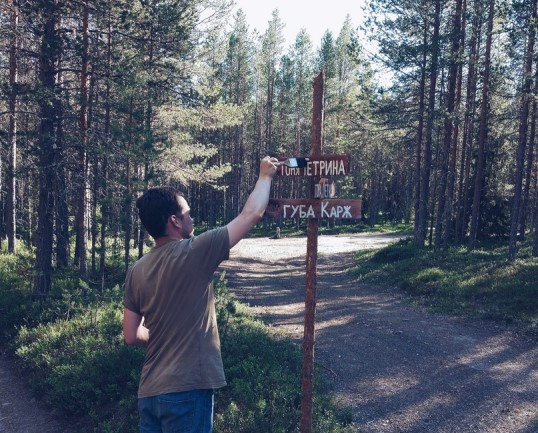

Координаты тони 66.556969, 34.649082
1. Дорога Умба-Варзуга. На 23м км. от Умбы (после столбика «22 км.»), поворот направо.
Вас встретит грунтовая дорога, ведущая к полю.
(ориентиры – «столб 22 км», поле слева)
2. После пересечения поля дорога приведет вас к первой развилке. Справа будет находиться дачный поселок. Вам необходимо ехать прямо, пока не достигнете берега моря.
(ориентиры – пляж)

3. Этот участок закрыт из-за прилива примерно 2-3 часа, дважды в день.
Ссылки на сервисы прогнозирующие «приливы-отливы»:
Первая
Вторая
Если вы попали в отлив или в половину воды, без труда сможете проехать по плотному песку направо, вдоль моря.
Следы от проехавших ранее машин приведут вас к повороту на сушу, где стоит П-образная постройка ( три балки, около них поворот с пляжа на грунтовую дорогу).
Если следов не видите, изучите прикрепленные фотографии-ориентиры.
(ориентиры – П-образная постройка)

4. Далее двигайтесь вдоль моря, по берегу, до событийного креста.
Этот участок с событийным крестом, называется "Веж-наволок", что означает "Берег вежей". Вежа - это саамское жилище, таким образом данное название может свидетельствовать что на этом месте ранее находился довольно крупная саамская ставка.
Здесь вы должны повернуть направо, и свидетельством того что вы движетесь в правильном направлении станет горка.
(ориентиры – указатели, крест, горка)

4. После того, как вы спустились с горки и никуда не сворачивая проехали песчаный участок, вас встретит развилка с указателями. Добраться до тони можно будет двумя путями.

ВАРИАНТ 1. (указатель «губа Карж»)
Поворот налево приведет вас к тоне Тетрина вдоль берега моря.
Данный маршрут рекомендуем для водителей, которым больше нравится песчаная дорога.
ВАРИАНТ 2. (указатель «тоня Тетрина»),
В случае, если вы решите ехать прямо, вас ждет дорога через лес. Она более плотная, без глубоких луж и песка, но с корнями.
По дороге вам будут встречаться указатели.
